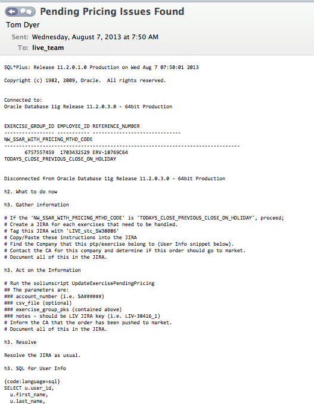
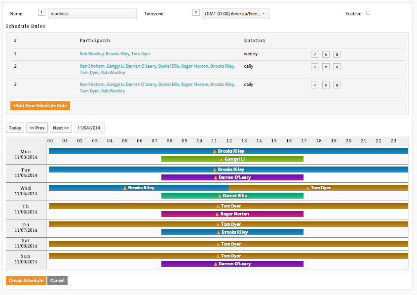
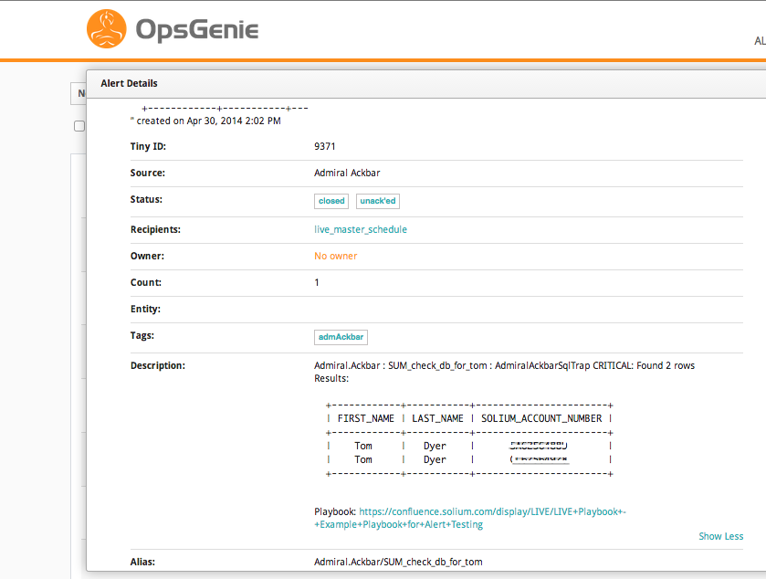
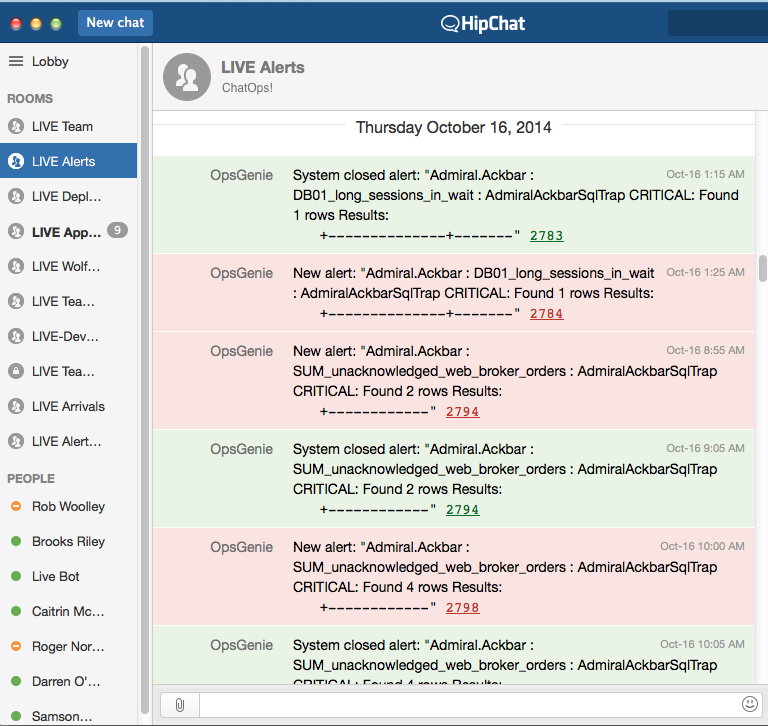

It's A Trap!
Alert Design for Admiral Ackbar
Tom Dyer
Systems Engineer - L.I.V.E. - Solium
http://tomdyer.ca / @thomaswsdyer
Powered by reveal.js
Alert Design is Easy...

Admiral Ackbar
Solium's Monitoring and Alerting System
- Sensu
- Custom and Community Plugins
- Primarily looks at application behaviour
- Used by LIVE, PSG and Rec
Monitoring Behaviour
Nagios watches the infrastructure.
Admiral Ackbar looks at behaviour:
- Are scheduled jobs running?
- WebLogic timers
- Users can login?
- Data integrity checks
- Is it on?
It's A Trap!
We do this monitoring through "Traps".
- SQL Scripts
- Java "SoliumScripts"
- Basic HTTP Checks
- API Calls
- Process Monitors
How Did We Get Here?

First Incarnation
An email to the entire team

Pre-formatted text for JIRA
Step-by-Step Resolution Instructions
The Good
- Copy / Paste Ticket Creation
- Defined Steps to Take
- We were now 'Pro-Active'
The Bad
- Email is "business hours only"
- No clear leader / ownership
- Continuous alerts
- No one reads email

In Summary

The Next Iteration
OpsGenie for Alerting
Two parallel schedules for different alert "types".

"Production alerts"
3 people
"Business Hours"
6 people
The Good

Directed Alerts!
Auto Close alerts!
Links to Wiki playbooks!
OpsGenie!
The Bad

Alert / Pager Fatigue for 3 people
Some alerts could only be handled by certain people
More schedules = More overhead
Wait...who's on call?!?
So Close...

Current Iteration

OpsGenie with ONE Schedule!
Alerts go to HipChat and Pager.
Lights! Camera! Action(able)!
- One responsible person
- Detailed, step-by-step resolution
- Real alerts that require action!
- Transparent resolution
Every alert is actionable by everyone!
Still Iterating!

Admiral Ackbar for multiple business units!
More Traps!
Automagic Remediation?
Alert Design
The Do's!
- Concise, actionable alerts
- Defined response structure
- Simple schedules / rotations
- Keep Improving!
Alert Design
The Dont's!
- Notifications vs. Alerts
- Spamming and Mass Emails
- Don't panic
Thank You!

Questions?